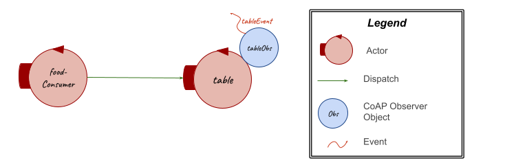

Introduction
The starting point for this SPRINT is the resulting model from the problem analysis:| Machine Understandable Architecture Model | A Possible Graphic Representation |
|---|---|
|
ProblemAnalysisModel.qak |

|
Goal
Table state: consumption of food- Planning: insert an initial map representation and use of Planner
- Integration of
basicRobot with therbr Prepare the room task : path execution by the virtual robotAdd Food task : path execution by the virtual robotClear the room task : path execution by the virtual robot
Problem/Goal Analysis
The goals set by problem analysisFood Consumption
By requirements, to execute the Clear the room task, the RBR must take non-consumed food from the table and bring it to the fridge.In problem analysis
To do this, it can be introduced a new mock actor which interacts, after the prepare the room task and before the clear the room task, with the table to change its state.

Planning
As already said in problem analysisThe planning feature (documented in the LabPlanner2021) is the capability to plan actions in a logical space. This space is a map described by a set of square cells whose edges are robot sized. So it's possible to see a step of the robot as the ingress in a new cell. Furthermore, the planner keeps track of the current logical position of the robot in the map.
Some of the most useful operations provided by the planner (in it.unibo.plannerUtil
- initAI(), which initializes the planner assuming that the robot is in the robot home position;
- loadRoomMap(fname:String), which allows the system to load a map;
- showMap(), which allow the system to print the map;
- planGoal(x:int, y:int), which allows the system to set a goal to be reached providing the coordinates of the goal cell;
- doPlan(), which allows the system to get the moves, as a list of actions, to reach the goal from the current position;
- getNextPlannedMove(), which allows to get the next move from the list of actions;
- planForGoal(x:String, y:String), which executes in sequence planGoal and doPlan operations;
- updateMap(move:String, msg:String=""), which allows to realize a move of the robot updating its position in the logical map;
- get_curPos(), which returns the current logical position of the robot in the map;
- getDirection(), which returns the current logical direction of the robot in the map.
basicRobot
As already said in problem analysisIn particular, the actor basicRobot (
- a dispatch cmd:cmd(MOVE), where MOVE can be w to move forward, s to move backward, l to turn left, r to turn right or h to stop the robot;
- a request step:step(TIME), to move forward the robot for a prefixed time TIME. At this request the basicRobot can reply with stepdone:stepdone(V) if the command execution ends successfully or with stepfail:stepfail(DURATION, CAUSE) if it fails after the time DURATION for some reason CAUSE.
Test Plans
With reference to the problem analysis test plans, below it's reported a functional tests planning related to the goals of this sprint:- Tests of the position of the RBR that must be on its RH when system starts and at the end of each task;
- Tests of the path carried out by the RBR that must be the one expected to execute the task required by the Maître de Salle.
Project
Table State: Consumption of Food / Food Consumption on Table Resource / FoodConsumer Actor
FoodConsumer Actor??
(As said above/before in the goal/problem analysis of this sprint,) To make possible the consumption of the food on the table, it has been added a mock actor FoodConsumer in the maitre context which send a dispatch message (changeState(remove, FOOD)) to change the state of the table, so to remove some food. The elements to remove from the table are loaded from a prolog file (NAME.pl).[IMG: actor part from qak?]
[IMG: ctxmaitre: FoodConsumer --> dispatch --> Table --> updateState --> obsTable --> event]